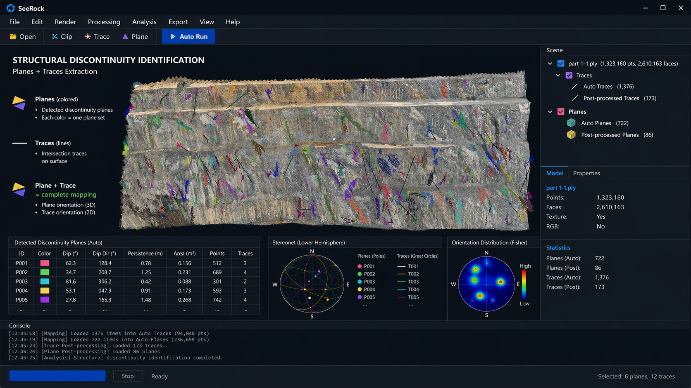
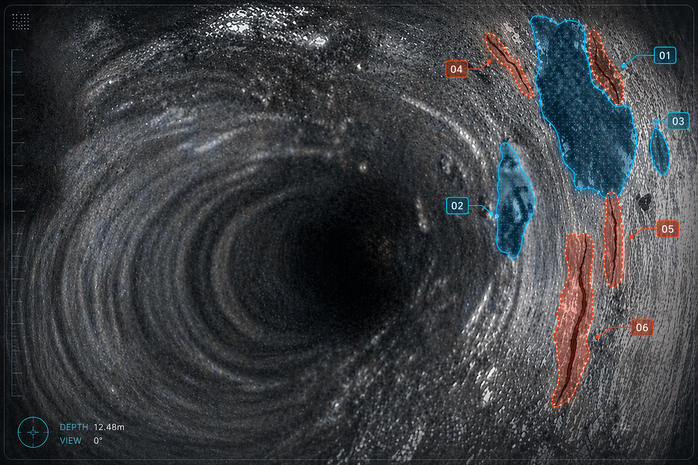
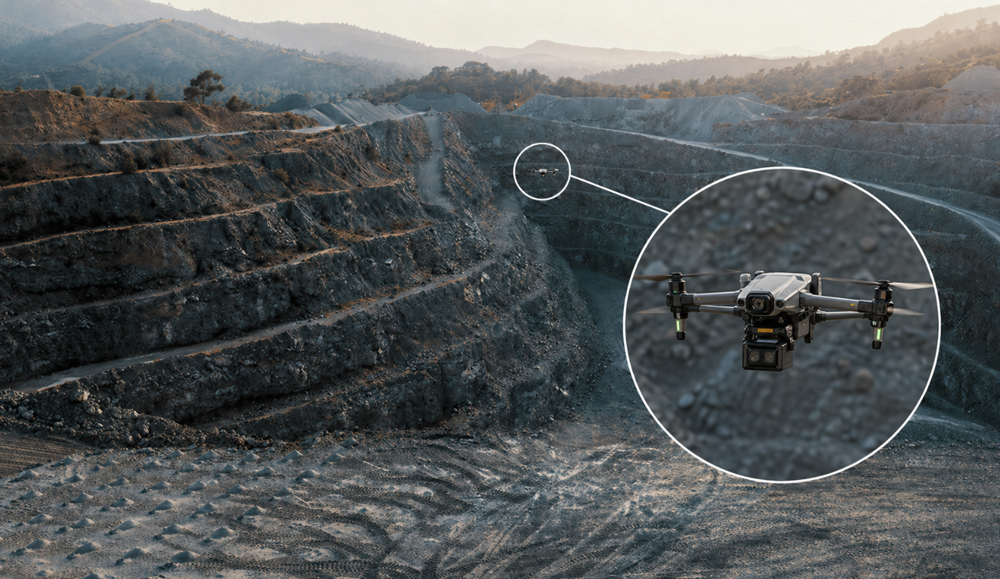
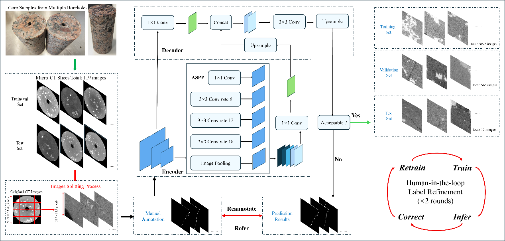

矿山多视角摄影三维重建与
岩体结构智能解析

矿山多视角摄影三维重建与岩体结构智能解析系统，由多目矿山成像采集装备 + 智能解析软件成套组成，面向露天矿台阶、地下巷道、采场工作面、隧洞掌子面等近景岩体结构面场景。依托专用多目成像装备完成多视角高清图像快速采集，搭载三维重建与 AI 智能识别算法，自动提取裂隙迹线、节理、断层边界及面状结构面，生成附带空间坐标与产状参数的三维岩体结构模型。整套成套系统可替代传统人工现场编录，解决人工调查覆盖范围受限、高危区域无法抵近观测、成果依赖个人经验、一致性重复性差、原始数据难以数字化归档建模等痛点。单个工作面现场影像采集仅需分钟级至十几分钟，软件端三维重建与结构面智能识别可在数分钟至数十分钟内全自动完成，实现当班采集、当班识别、当班出参，支撑现场即时分析与快速生产决策。配套软件可自动输出结构面倾向、倾角、间距、迹线长度、节理组分类、赤平投影图、节理玫瑰图、CSV 参数报表、DXF 结构圆盘模型等成果，支持无缝导入 FLAC3D、3DEC、AutoCAD 等主流工程分析设计软件。系统核心价值是以低成本模式实现更安全、更高效、标准化、可追溯、可动态更新的岩体结构精细化调查，为巷道支护设计、爆破方案优化、边坡稳定性评价、危岩块体识别及矿山整体风险管控，提供数字化、可视化、可落地的技术依据。
数字岩心 AI 编录与
高精度建模

数字岩心 AI 编录与高精度建模装备系统，由岩心滑轨成像采集装备 + 智能编录建模软件成套组成，面向钻孔岩心自动化智能编录场景。依托专用滑轨式成像平台，对岩心箱开展稳定、连续、标准化全景拍摄，融合 AI 智能识别算法、摄影测量技术与 Gaussian Splatting 高斯溅射三维重建技术，自动识别岩心分段、裂隙、断口、破碎带、岩性分界、刻度标尺及人工标注信息，生成附带空间位置与精细结构参数的三维数字岩心模型。整套成套系统可完全替代传统人工岩心编录模式，解决人工编录耗时费力、执行标准不统一、成果过度依赖人员经验、历史资料复查溯源困难、原始岩心数据难以数字化归档与三维建模等行业痛点。单箱岩心影像采集可实现分钟级快速完成；基于高斯溅射技术的三维岩心重建，能够分钟级完成高精度建模与实景可视化；岩心自动分段、裂隙智能识别及标准化编录全流程，可在分钟级至十分钟级全自动办结，支撑岩心数据快速入库、实时迭代更新与大批量自动化批量处理。配套软件可自动输出岩心分段结果、裂隙空间位置、节理间距参数、RQD 指标、破碎带延展长度、岩性分层划分、数字岩心影像档案、高精度三维数字岩心模型及标准化编录成果报表，成果数据可直接支撑 RMR、Q 值等主流岩体质量分级评价。系统核心价值是以低成本实现高效率、标准化、可追溯、动态可更新的岩心全流程数字化智能编录，为矿产资源评价、岩体质量等级划分、三维地质建模、裂隙网络仿真建模及矿山开采规划设计，提供标准化、数字化、可复用的基础技术依据。
随钻视频孔壁成像与
地应力智能分析

随钻视频孔壁成像与地应力智能分析系统，由随钻孔壁成像采集装备 + 地应力智能分析软件成套组成，面向钻孔内部结构实时识别、孔壁连续展开分析及地应力特征智能判识场景。依托随钻摄像、钻孔内窥及孔壁专用成像装置，可在钻进作业过程或成孔后检测环节，连续采集钻孔岩壁全景影像；融合视频稳像、图像增强、深度配准、孔壁圆周展开及 AI 智能识别算法，自动解译提取孔壁裂隙、层理构造、破碎带、软弱夹层、渗水通道与岩性分界面，同时依据孔壁剥落、片帮垮落、孔壁破裂方位等特征，智能辅助研判主应力方向、应力集中区域及高地应力风险区段，生成附带深度坐标与圆周方位信息的钻孔展开图谱及结构化专业分析成果。整套系统可全面替代传统钻孔视频人工查看与纸质编录模式，解决传统方式无法实时处理、孔壁影像难以连续展平、结构特征无法定量识别、成果数据难以标准化入库等突出问题，同时弥补岩心资料与孔壁空间位置对应模糊、软弱构造带识别滞后、高地应力区微破裂迹象难以及时捕捉等技术短板。单段钻孔视频采集可与钻进施工或钻后检测同步开展，孔壁全景展开、裂隙智能识别与结构参数提取均可实现分钟级全自动处理；在随钻作业场景下，可达成边采集、边展平、边识别、边迭代的一体化作业模式，为掌子面前方地质结构及地应力演化特征提供即时动态反馈。配套软件可自动输出孔壁圆周展开图、裂隙深度定位、裂隙延展轨迹、结构面倾角倾向、破碎带空间分布、岩性分层界线、渗水异常区域、孔壁剥落片帮位置、钻孔破裂方位图谱及钻孔结构专业日志；成果可与工作面岩体结构识别、岩心智能编录及现场实测地应力数据开展联合耦合分析，辅助精准判定主应力方位、圈定应力集中区、识别构造破碎带及预判潜在岩爆高风险区域。系统核心价值是以低成本实现全过程连续化、分析高效化、成果可追溯、数据可动态更新的钻孔结构与地应力特征精细化研判，为主应力方向精准判识、超前地质预报、导水构造识别、破碎带精确定位、高地应力风险评估、采掘作业风险预警及矿山优化设计，提供专业可靠、实时可用的数字化决策依据。
无人机边坡智能航测与
三维结构分析系统

无人机边坡智能航测与三维结构分析系统，由无人机航测采集装备 + 边坡三维智能分析软件成套组成，面向露天矿边坡、排土场、高陡岩质边坡、多级台阶等大范围岩体结构面智能识别场景。依托专业航测无人机快速采集多视角高清影像，融合摄影测量、实景三维建模与 AI 结构面智能识别算法，全自动完成边坡全尺度三维实景重建，精准提取边坡裂隙、节理构造、断层迹线、台阶边界及潜在失稳块体，输出完整全边坡三维结构模型与专业化数字化分析成果。整套系统可替代传统边坡人工现场编录模式，有效解决人工调查覆盖范围受限、高危陡坡区域无法抵近作业、高陡岩壁难以近距离观测、跨台阶结构面无法连续追踪、巡检成果无法动态更新等行业痛点。针对中小型矿山边坡，无人机野外影像采集仅需十几分钟至数十分钟即可完成；边坡全尺度三维重建与结构面智能解译识别，可在数十分钟至小时级全自动办结。针对重点边坡区段，支持周期性航测复测，实现边坡结构形态快速更新、形变演化与隐患变化持续跟踪。配套软件可自动输出边坡三维点云、网格模型、全尺度三维边坡实景模型、结构面产状参数、迹线空间分布、节理组智能分类、赤平投影图、节理玫瑰图、跨台阶结构面融合成果及潜在失稳风险区划图；数据成果可无缝对接边坡稳定性计算、爆破方案优化及在线监测预警平台实现联动应用。系统核心价值是以低成本模式实现作业更安全、覆盖范围更广、结构追踪更连续、成果可动态更新的边坡结构精细化调查与全尺度三维建模，为边坡稳定性评价、滑坡隐患精准识别、台阶形态优化、爆破影响定量评估、常态化安全巡检及矿山整体风险管控，提供专业、实时、可落地的数字化技术支撑。
岩石颗粒智能粒径
识别服务

岩石颗粒粒径智能识别服务面向矿山爆破块度评估、矿石堆粒度分级、皮带输送粒径在线监测及破碎筛分工艺优化等业务场景，依托普通工业相机、高清摄像设备、无人机航拍及现场固定监控终端多渠道采集岩石颗粒影像数据；融合法线贴图（Normal Map）加持的多模态实例分割算法，自动精准勾勒岩块轮廓边界、粘连颗粒智能分离，批量计算岩体颗粒粒径分布特征。技术路径引入法向量图谱表征岩块表面几何形态变化，强化颗粒边缘轮廓、阴影粘连区域、低对比度岩块边界的辨识能力，有效克服现场光照不均、阴影干扰、岩块堆叠粘连等复杂工况影响，实现矿山真实场景下高鲁棒性、高精度的稳定块度分析。本服务可彻底解决传统人工筛分、人工图像判读耗时耗力、抽样代表性差、光照阴影干扰大、相邻岩块难以精准分割、不同作业场景需反复调参适配等行业痛点。实测研究表明，实验室训练模型具备强泛化迁移能力，可无需重新训练直接部署应用于矿山现场；粒径分布检测结果与人工真值标注偏差控制在 10% 以内。模型推理可达秒级单图处理，单张影像快速完成颗粒分割与尺寸解算，批量影像、无人机航拍影像、输送带连续抓拍影像均可在分钟级输出完整块度统计成果，支持现场快速部署、实时分析、即时反馈。配套软件可自动输出颗粒分割标注图、单颗粒等效粒径、长短轴几何尺寸、D10/D50/D80/D90 特征粒径、平均粒径、最大粒径、超径占比、细粒含量及粒径分布特征曲线；成果数据可无缝对接爆破参数设计、破碎站入料智能管控、筛分系统优化及矿山生产调度平台联动应用。核心价值是以低成本方式实现检测更高效、识别更稳定、跨场景免调参、数据可实时更新的岩石粒径智能识别与爆破块度定量分析，为矿山爆破参数优化、破碎筛分效率评价、矿石运输调度管控及矿山生产全流程质量控制，提供专业化、数字化、实时化技术支撑依据。
小尺度岩体 CT
扫描服务

小尺度岩体 CT 精细扫描与细观结构智能解析模块，面向岩心局部试样、标准岩石试件及细观尺度下矿物 - 孔隙 - 裂隙全要素识别场景。依托工业 CT、微米级 CT 及高分辨率 CT 设备，精准获取岩石内部高清三维断层影像；融合 Hessian 引导形态感知深度学习算法，自动完成矿物颗粒、原生孔隙、微裂隙、矿物边界及内部损伤演化特征的智能分割与精准提取。本模块重点弥补宏观测绘、岩心智能编录、钻孔视频检测等手段无法窥探岩石内部细观构造的短板，构建从露天矿边坡、井下工作面宏观尺度，到岩心 / 钻孔中尺度，再到 CT 细观尺度的多尺度递进式岩体结构完整表征体系。可有效解决传统 CT 影像人工标注耗时费力、矿物边缘辨识难度大、低对比度矿物难以精准分割、微细矿物与微裂隙易漏检、三维重建成果一致性差等行业痛点。系统依托 Hessian 矩阵提取二阶几何结构特征，强化矿物边界轮廓、颗粒形态特征及孔裂隙空间连通性的识别能力；相关试验验证表明，该算法可显著提升 CT 矿物分割的 IoU、Dice、召回率及空间连通性指标，同时可由二维切片逐层解译、堆叠重构，生成全域三维矿物分布模型。针对标准 CT 扫描数据，单张切片可实现秒级智能分割，批量切片数据集可在分钟级至小时级全自动完成矿物分类、孔裂隙参数统计及三维模型重建分析。配套软件可自动输出 CT 全景三维重建模型、多类别矿物分割成果、岩体孔隙率、裂隙体积分数、矿物体积分布规律、裂隙长度 / 开度 / 产状取向、裂隙空间连通性及细观损伤变量、精细结构模型等成果数据，可直接支撑渗流机理分析、孔隙网络建模、岩石力学参数反演及多场耦合数值模拟研究。其核心价值是以低成本实现岩体内部细观结构高精度、可量化、可追溯的智能识别与数字化表征，与无人机边坡航测、多目工作面识别、随钻孔壁成像、数字岩心编录系统形成完整多尺度数据闭环，为数字岩心精细建模、岩石破裂机理研究、岩体力学参数反演及矿山工程精细化设计，提供不可或缺的细观尺度数字化基础依据。